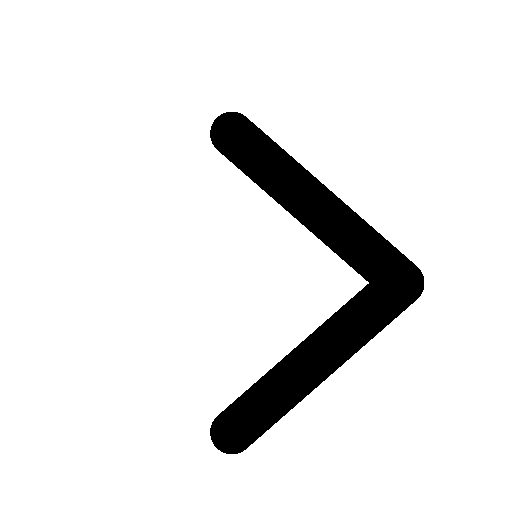

Bekijk hele
assortiment
Computers & tablets
Beeld & geluid
Telefonie
Huishouden & wonen
Keuken
Sport & verzorging
Foto & video
Navigatie, reizen & fashion
Tuin & klussen
Coolblue Energie
Acties
English
Menu
Computers & tablets 
Beeld & geluid
Telefonie
Huishouden & wonen
Keuken
Sport en verzorging
Foto & video
Navigatie, reizen & fashion
Tuin & klussen
Coolblue Energie
Acties
Je winkelwagen is leeg
Tot op de bodem uitgezocht door Gerrit.
Verder winkelen
Inloggen